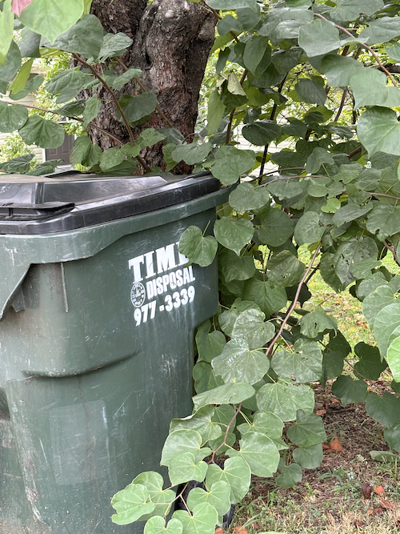
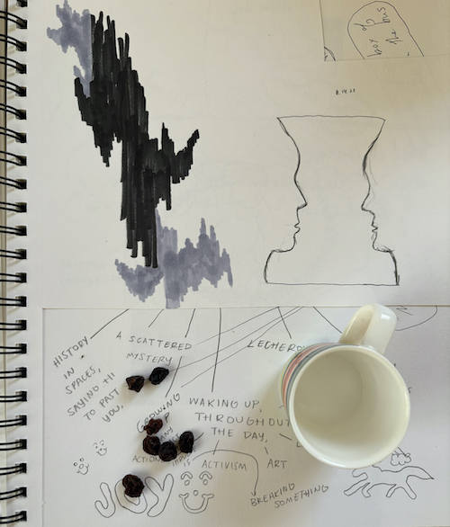
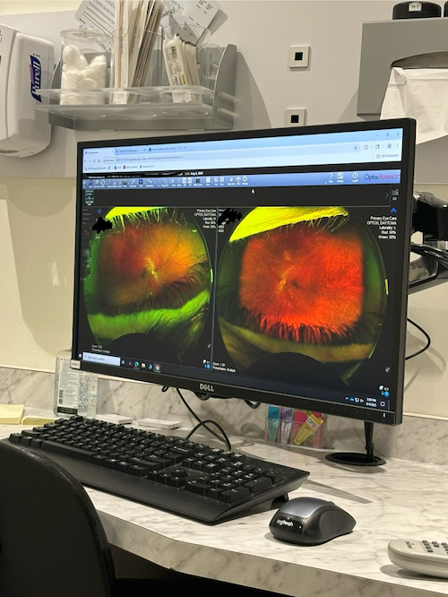
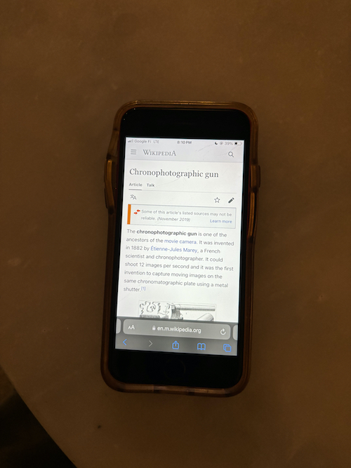
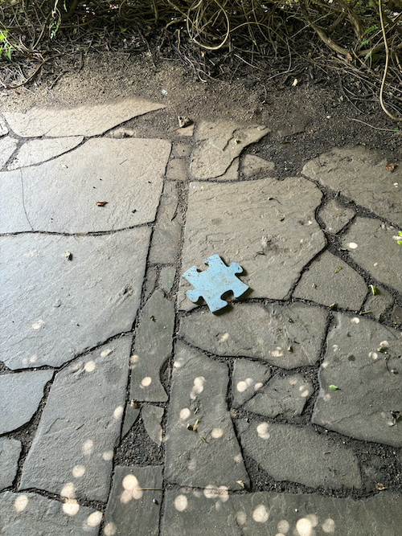
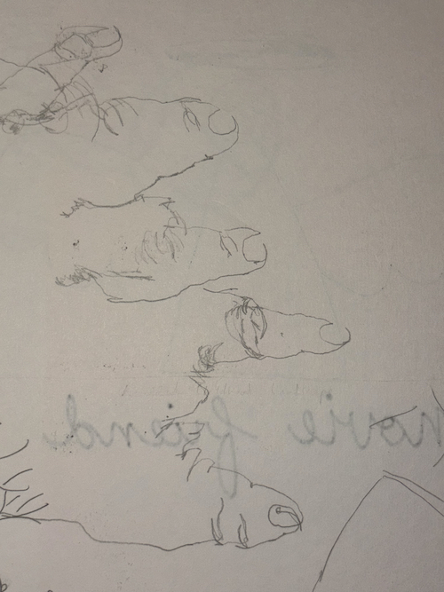
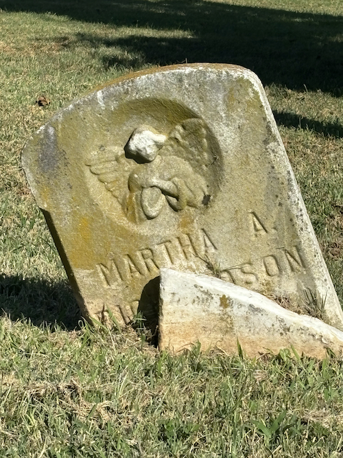
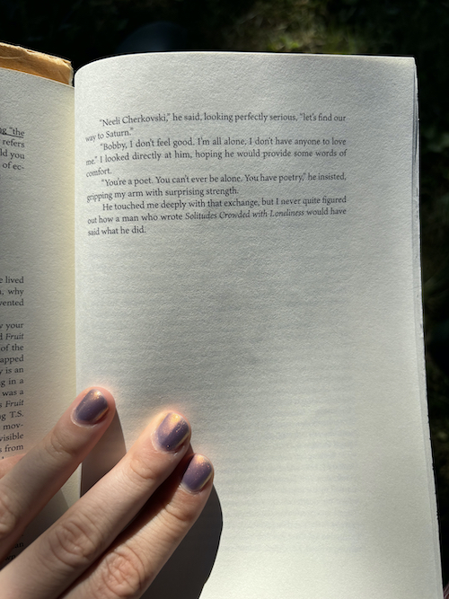

August!!
- It's so embarrassing to peddle my work.
- Maya and I are going to write essays.
- Hat completely in my hands.
- Legitimate Surprise
- gonna get better at looking
- Feeling bested by life, but I pulled the nine of wands - - - -
- "I don't know if I could drive a car / Fast enough to get to where you are /
Or wild enough not to miss the boat completely / Honey, I'm thinking maybe /
You know, just maybe // I don't know if I could fly a plane /
Well enough to tail spin out your name /
Or high enough to lose control completely /
Honey, I'm thinking maybe / You know, just maybe / Maybe"
- The strain is mutual, neutral.
- "Because you say I for me."
- It wasn't a waste / I lost my wings
- Longest month of my life.
- Just when I started regularly leaving the house, I get sick, like my desire to be stationary is physiological.
- This is embarrassing.
- Cooped up in the house, I want to play card games with someone who loves me.
- Just me and the lawn mower battery.
|

|
 |
 |
|  |
|

|
|  |
 |

|